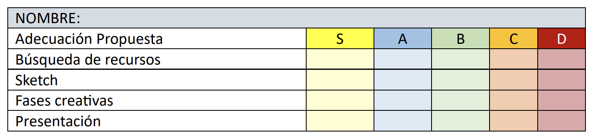

Instrumentos de evaluación
Como método de motivación para el alumnado, implementaré un sistema de
pasaportes que se irán sellando con diferentes insignias. El objetivo es informar al
estudiante sobre el nivel de desempeño alcanzado en los distintos criterios de
evaluación. Para llevar a cabo esta dinámica, he diseñado un pasaporte imprimible que
se preparará y entregará de forma individual a cada alumno.
Este documento contará con espacios destinados a certificar las siguientes áreas:
Adecuación de la propuesta, Búsqueda de recursos, Elaboración del sketch, Fases
creativas y Presentación. La calificación de cada apartado se representará mediante un
sistema de letras (S, A, B, C, D), donde 'D' representa la calificación más baja y 'S' la más
alta.
De manera complementaria, se diseñará una rúbrica sencilla basada en estos mismos
conceptos. Esto permitirá una evaluación paralela: el docente registrará las
calificaciones en la rúbrica, mientras que los alumnos visualizarán su progreso en sus
pasaportes.
Por último, la evaluación de las fases creativas y de la presentación final se realizará
mediante el portafolio del alumno, plataforma en la que el estudiante deberá
documentar todos los recursos y etapas de desarrollo de su proyecto.
